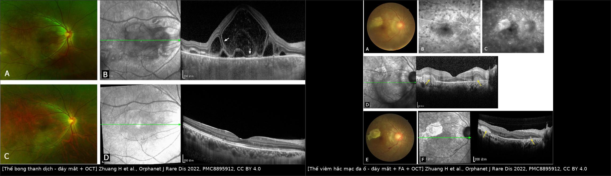
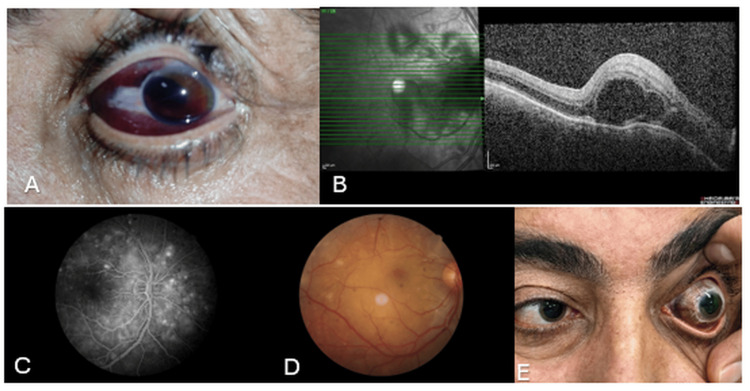
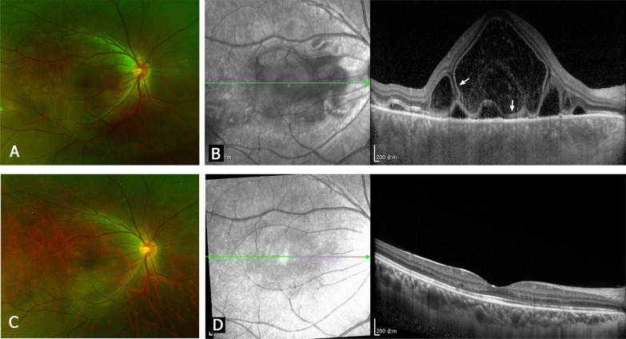
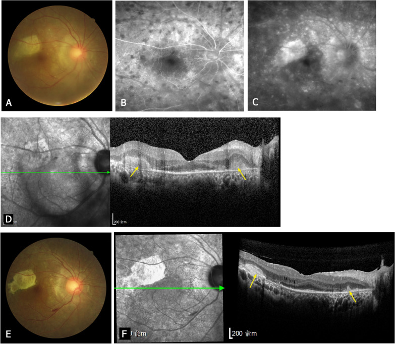
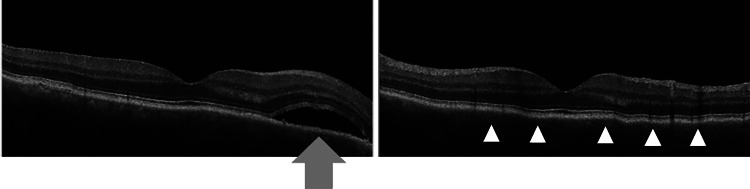

1438 — Viêm màng bồ đào giao cảm / Sympathetic ophthalmia (SO)
Tags: pattern:viem-toan-hac-mac pattern:viem-mang-bo-dao pattern:u-hat pattern:bong-vong-mac-thanh-dich pattern:day-hac-mac pattern:dalen-fuchs pattern:hai-ben pattern:sau-chan-thuong pattern:sau-mo-noi-nhan vung:mat vung:hac-mac vung:vong-mac vung:tien-phong vung:dia-thi protocol:OCT protocol:EDI-OCT protocol:FA protocol:ICGA protocol:B-scan protocol:CT score:SUN-2005
Mức chắc chắn (certainty): tổng hợp y văn (literature synthesis) — 1 tổng quan dịch tễ 340 bài (2025), 2 tổng quan cơ chế–điều trị (2022, 2012 FD Ophthalmic), 1 loạt 48 ca có phân loại OCT (2022), 1 phân tích gộp sau cắt dịch kính (2023), 1 phân tích gộp sau mổ nội nhãn (2024), 1 loạt 14 ca Ấn Độ (2018), 1 loạt 15 ca Đài Loan (2023), và 3 ca nguyên văn có ảnh. Không có RCT cho liều corticoid hay thời điểm cắt bỏ nhãn cầu — các khuyến cáo dựa trên đoàn hệ hồi cứu và ý kiến chuyên gia, đã ghi rõ.
Vì sao bài này quan trọng: bài 1436 dạy VKH — bệnh viêm toàn hắc mạc hai bên, không có tiền sử can thiệp mắt. Nhưng khi bệnh nhân có chấn thương xuyên thấu hoặc mổ nội nhãn ở một mắt, mọi thứ đảo ngược: chẩn đoán là viêm màng bồ đào giao cảm (sympathetic ophthalmia, SO), mắt đã tổn thương là mắt kích thích (exciting/inciting eye), mắt còn lại là mắt được giao cảm (sympathizing eye) — và chính mắt "lành" mới là mắt quyết định thị lực. Đây là chẩn đoán bỏ sót được nhưng điều trị được, và là lý do duy nhất trong nhãn khoa để cắt bỏ một nhãn cầu còn nhìn thấy (khi mắt kia đe dọa mù). Bài này trả lời ba câu hỏi thực hành: (1) khi nào nghi SO, (2) phân biệt với VKH/viêm do thấu kính/nhiễm trùng bằng gì, (3) theo dõi và điều trị bao lâu.
1. Tổng quan bệnh học – cơ chế hình ảnh – vì sao "giao cảm"
- Bệnh học: SO là viêm toàn màng bồ đào u hạt (granulomatous panuveitis) hai bên, khởi phát sau chấn thương xuyên thấu có sa u hắc mạc hoặc mổ nội nhãn ở một mắt. Về mô bệnh: hắc mạc, thể mi và mống mắt dày lan tỏa, thấm nhiều tế bào lympho, tế bào biểu mô (epithelioid) và tế bào khổng lồ; lớp choriocapillaris điển hình được "spare" (dù có loạt thấy thâm nhiễm lympho khu trú khi kèm viêm nội nhãn). Nốt Dalén–Fuchs gặp ở ~30% ca, nằm ngay trong (nội) màng Bruch, gồm lympho, histiocyte và tế bào RPE biến đổi.
- TẠI SAO mắt bên kia bị viêm: chấn thương/mổ làm kháng nguyên võng mạc–hắc mạc (retinal S-antigen, IRBP — interphotoreceptor retinoid-binding protein) thoát vào mô lympho kết mạc. Đây là "cửa sau" miễn dịch: tiền phòng có TGF-β ức chế miễn dịch, còn kết mạc thì không. Tế bào T được mẫn cảm rồi homing về cả hai mắt vì hai mắt chia sẻ cùng kháng nguyên → viêm đối xứng nhưng không đồng thời. Thực nghiệm: tiêm S-antigen vào tiền phòng chỉ gây phản ứng tại chỗ; tiêm vào dưới kết mạc mới gây bệnh ở mắt đối diện. → Hệ quả lâm sàng: bảo tồn bao kết mạc và đóng kín vết thương sớm không chỉ để cứu mắt tổn thương mà còn để giảm phơi nhiễm kháng nguyên.
- TẠI SAO có bong võng mạc thanh dịch (serous retinal detachment, SRD): viêm hắc mạc làm tăng tính thấm mao mạch hắc mạc + bơm RPE suy → dịch huyết thanh tích dưới võng mạc cảm quang. Trên OCT, dịch này trong quang học nên là khoang giảm phản xạ (hyporeflective), không có màng co kéo; võng mạc ngoài bị đẩy lên nhưng các dải ELM/EZ vẫn còn ở phần lớn ca → yếu tố tiên lượng hồi phục.
- TẠI SAO có "sunset glow" muộn: viêm hắc mạc mạn làm mất sắc tố RPE, lộ hắc mạc → đáy mắt cam–hồng, xuất hiện sau nhiều tháng; đây là dấu hiệu muộn, không dùng để loại trừ lúc cấp.
- TẠI SAO thời gian tiềm tàng dài: cần thời gian mẫn cảm và khuếch đại tế bào T; vì vậy khoảng cách 5 ngày đến 66 năm, nhưng 80% trong 3 tháng và 90% trong 1 năm. Loạt 48 ca thể sau (posterior SO): 43,8% < 3 tháng; 22,9% 3–12 tháng; 33,3% > 1 năm.
- Dịch tễ định lượng (thay đổi theo thời đại):
- Sau chấn thương xuyên thấu (open globe injury, OGI): 0,12% (gộp 8 nghiên cứu/7.620 ca, 21 ca SO, 2023); 0,19% (gộp 24 nghiên cứu, 2022) ≈ 33/100.000 người–năm. Thế kỷ XIX–XX từng 0–16% (Nội chiến Mỹ 14%, chiến tranh Pháp–Phổ 50–56%).
- Sau mổ nội nhãn: 0,061% (gộp 19 nghiên cứu, 2024) ≈ 9,24/100.000 người–năm; không khác trước/sau kỷ nguyên vi phẫu 1975.
- Sau cắt dịch kính (pars plana vitrectomy): 0,016–0,13% (Nhật 0,016%; Moorfields 0,04%; L V Prasad 0,038%; Gass 0,06%; Kilmartin 0,13%); 0/23.903 ca ở Anh 2017–2021. Nguy cơ tăng theo số lần mổ: 1 lần 0,008%, 2 lần 0,084%, 3 lần 0,158%, 4 lần 1,028%, 7 lần 6,667%.
- Sau đục thể thủy tinh: 0–0,23%; sau đốt thể mi bằng Nd:YAG: 0,67–5,8%; sau proton beam cho melanoma hắc mạc: 6,1/10.000 (3/4.867).
- Quần thể chung: 0,03/100.000/năm (Anh 1997–1998) → 0,007/100.000/năm (TRICARE Mỹ 2017–2021); SO chiếm 1–2% tổng số viêm màng bồ đào.
- Điểm cực kỳ quan trọng về "phòng ngừa": cắt bỏ nhãn cầu không xóa hết nguy cơ — sau cắt bỏ nhãn cầu vì OGI vẫn còn 0,3–0,9% SO; và không có bằng chứng corticoid dự phòng ngăn được SO. Đã có SO 5 ngày sau chấn thương, tức là sớm hơn cả "cửa sổ 2 tuần" kinh điển.
2. Mẫu hình + chẩn đoán phân biệt theo vị trí (Gamut)
- Mẫu hình chốt: viêm toàn màng bồ đào u hạt HAI BÊN + tiền sử chấn thương xuyên thấu/mổ nội nhãn ở MỘT mắt (kể cả đã nhiều năm). Hai mắt thường không đối xứng: mắt kích thích có thể teo/nhìn kém, mắt giao cảm mới là mắt đang mờ.
- Theo tổn thương đáy mắt (phân loại thực dụng 2022):
- Thể bong thanh dịch (SRD) — 85,4%: nhiều túi dịch quanh đĩa thị/hoàng điểm, có thể lan thành bong lớn; OCT: chiều cao SRD ở hõm hoàng điểm 528,8 ± 437,5 µm; sau điều trị 92,7% phục hồi dải võng mạc ngoài.
- Thể viêm hắc mạc đa ổ (multifocal choroiditis, MFC) — 14,6%: nhiều ổ vàng–trắng từ cực sau ra ngoại vi (có ca > 20 ổ), luôn kèm viêm dịch kính nhẹ–trung bình; thời gian tiềm tàng dài hơn (p = 0,002) và thị lực cuối xấu hơn (p = 0,0001), 100% mất dải võng mạc ngoài + xơ hóa tăng phản xạ.
- Theo vị trí viêm: thể trước (tế bào/flare tiền phòng, nốt Koeppe–Busacca, dính mống mắt sau), trung gian (tế bào dịch kính, snowbank), sau (SRD, viêm hắc mạc, viêm mạch, phù đĩa thị), toàn thể (phổ biến nhất khi đã rõ).
- Gamut "viêm màng bồ đào u hạt hai bên sau can thiệp mắt": SO · VKH tự phát (1436) · VKH-like do ICI (1437) · viêm do thấu kính (phacoantigenic/lens-induced) · viêm nội nhãn nhiễm trùng (1425/1426) · dị vật nội nhãn tồn lưu/siderosis · u lympho nội nhãn (masquerade) (1435/493) · sarcoid/lao/giang mai · bong hắc mạc (uveal effusion) · CSCR do corticoid (470).
- Ba câu hỏi sàng lọc tại giường: (1) Có tiền sử chấn thương/mổ nội nhãn ở mắt kia không (hỏi cả chấn thương thời thơ ấu)? (2) Hai bên không, và có viêm hắc mạc thật không (SRD/MFC + hắc mạc dày)? (3) Có loại trừ được nhiễm trùng và dị vật không? Nếu (1)+(2) và (3) đã loại trừ → SO.
3. Bảng so sánh phân biệt (ma trận đối chiếu)
| Thực thể (entity) | Hình ảnh điển hình (OCT/FA/B-scan) | Chốt vào (rule-in) | Chốt loại (rule-out) | Gợi ý xác nhận |
|---|---|---|---|---|
| SO — thể SRD | SRD vòm–nhiều túi, hắc mạc dày lan tỏa; FA rò điểm (pinpoint) thì sớm + đọng thuốc thì muộn; B-scan: dày hắc mạc + bong nông | Tiền sử chấn thương/mổ nội nhãn một mắt + hai bên + SRD không màng co kéo; hắc mạc dày | Không có tiền sử can thiệp → nghĩ VKH; có mủ tiền phòng + đau nhiều + cấy (+) → viêm nội nhãn | OCT + FA; loại trừ nhiễm; đáp ứng corticoid toàn thân |
| SO — thể MFC | Nhiều ổ vàng–trắng; OCT tổn thương dưới RPE, FA giảm huỳnh quang sớm + nhuộm muộn; sau điều trị xơ hóa + mất dải ngoài | Tiền sử can thiệp + nhiều ổ hắc mạc + viêm dịch kính; tiềm tàng dài hơn thể SRD | Không tiền sử + tổn thương một bên → nghĩ nhiễm/sarcoid/u | OCT qua ổ tổn thương, FA, ICGA |
| VKH tự phát | Giống hệt SO thể SRD; SFCT 900–940 µm cấp → 347–447 µm sau 1 tháng; BALAD (nếp gấp hắc mạc), sunset glow | Hai bên + hắc mạc dày + BALAD/HDD đối xứng, KHÔNG tiền sử chấn thương/mổ | Có tiền sử chấn thương/mổ nội nhãn → loại VKH | Hỏi tiền sử kỹ; ICGA; tiêu chuẩn Read 2001/SUN |
| VKH-like do ICI | Như VKH; khởi phát 22,2 ± 29,6 tuần sau thuốc; có thể vitiligo, ù tai | Đang/đã dùng ICI + hai bên + hắc mạc dày | Không phơi nhiễm thuốc → loại | Bệnh sử thuốc; HLA-DR4 không phân biệt được |
| Viêm do thấu kính (phacoantigenic) | Viêm u hạt một bên (thường), quanh thể thủy tinh/vỏ bao rách; mủ tiền phòng vô khuẩn | Tiền sử vỡ bao thể thủy tinh/mổ đục thủy tinh + tổn thương khu trú quanh thể thủy tinh | Hai bên + tiền sử chấn thương mắt kia → nghĩ SO; cấy âm không loại nhiễm | Soi đèn khe tìm vỏ bao; đáp ứng sau lấy vỏ/thể thủy tinh |
| Viêm nội nhãn nhiễm trùng | Mủ tiền phòng/dịch kính, đau tăng nhanh vài giờ–vài ngày, màng xơ dịch kính | Đau + mủ + cấy/PCR (+); sau mổ 1–7 ngày | Không đau, không mủ, hai bên, tiềm tàng tuần–năm → nghĩ SO | Cấy dịch kính/tiền phòng, PCR 16S |
| Dị vật nội nhãn tồn lưu / siderosis | Dị vật cản quang trên CT 1 mm; vòng sắc tố, đục thể thủy tinh, teo võng mạc tiến triển | Tiền sử búa/đạn + CT thấy dị vật + tổn thương một bên tiến triển | CT sạch + hai bên → ít nghĩ; MRI chống chỉ định khi nghi dị vật kim loại | CT hốc mắt không cản quang |
| U lympho nội nhãn (masquerade) | Thâm nhiễm dưới RPE/RPE, OCT dày hắc mạc + IL-10/IL-6 dịch kính > 1, corticoid đỡ tạm rồi nặng lại | IL-10 dịch kính > 65 pg/mL hoặc IL-10/IL-6 > 1; tế bào dị hình | Đáp ứng bền với corticoid + tiền sử chấn thương → SO | Sinh thiết dịch kính (492), IL-10/IL-6 |
| Bong hắc mạc (uveal effusion) | Bong hắc mạc dày, trơn, không viêm; FA không rò; siêu âm: hắc mạc dày | Không tế bào viêm + bong hắc mạc + siêu âm dày củng mạc | Có tế bào/flare + rò điểm → viêm | B-scan, OCT, loại trừ toàn thân |
| Sarcoid/lao/giang mai | U hạt quanh mạch, nốt mống mắt, dính sau; hai bên | X-quang/CT ngực (+), IGRA/RPR/TPHA (+), ACE tăng | Huyết thanh âm + không tổn thương toàn thân không loại trừ tuyệt đối | CT ngực, IGRA, huyết thanh, BAL |

Trái: thể bong thanh dịch — đáy mắt thoáng mờ + OCT khoang dịch dưới võng mạc vòm cao, hắc mạc dày. Phải: thể viêm hắc mạc đa ổ — nhiều ổ vàng–trắng, FA giảm huỳnh quang sớm, OCT tổn thương dưới RPE và xơ hóa sau điều trị. Nguồn: Zhuang H et al., Orphanet J Rare Dis 2022 (PMC8895912), CC BY 4.0. Ảnh ghép letterbox, không crop.Dấu hiệu "chốt" trên từng phương thức
- OCT: khoang giảm phản xạ dưới võng mạc không có màng co kéo + hắc mạc dày; đo chiều cao SRD tại hõm hoàng điểm (mm/µm). Sau điều trị, sự phục hồi ELM/EZ là dấu hiệu tiên lượng tốt (92,7% ca thể SRD).
- FA: rò điểm ở lớp RPE thì sớm rồi đọng thuốc vào khoang dưới võng mạc thì muộn — cùng cơ chế với VKH cấp; thể MFC có đốm giảm huỳnh quang sớm do nốt Dalén–Fuchs che hoặc do tắc choriocapillaris.
- ICGA: đốm giảm huỳnh quang hắc mạc (khu trú hoặc rải rác) — hữu ích khi FA không phân biệt được với CSCR.
- B-scan: hắc mạc dày lan tỏa + bong nông; dùng khi phương tiện đục (cataract, dính mống mắt sau, viêm dịch kính).
4. Protocol chụp + theo dõi + sơ đồ xử trí
- Chẩn đoán là lâm sàng, không có RADS riêng. Tiêu chuẩn tối thiểu (theo chuẩn hóa SUN): (1) tiền sử chấn thương xuyên thấu hoặc mổ nội nhãn ở một mắt; (2) viêm màng bồ đào hai bên (nếu mắt kích thích không quan sát được vì đã cắt bỏ/teo/đục giác mạc thì chỉ cần viêm ở mắt giao cảm); (3) loại trừ nhiễm trùng, bệnh tự miễn toàn thân và hội chứng masquerade. Mô bệnh của mắt kích thích chỉ là bằng chứng bổ trợ, không bắt buộc.
- Bộ ảnh tối thiểu khi nghi SO:
- OCT hoàng điểm (SD-OCT, axial 5–7 µm): 6 × 6 mm, 512 A-scan; đo chiều cao SRD và độ dày hắc mạc nếu có EDI-OCT.
- FA: 5 mL fluorescein 10% IV; chụp thì sớm 30–60 giây và muộn 5–10 phút — tìm rò điểm + đọng thuốc.
- ICGA (25 mg ICG, 790 nm): khi cần phân biệt với CSCR/bệnh hắc mạc khác.
- B-scan 10–20 MHz: khi không nhìn được đáy mắt.
- CT hốc mắt 1 mm không cản quang: bắt buộc khi có tiền sử chấn thương, để loại dị vật nội nhãn — không MRI nếu nghi dị vật kim loại.
- Xét nghiệm loại trừ: IGRA/Quantiferon, RPR/TPHA, ACE, CT ngực khi gợi ý sarcoid/lao.
- Điều trị (theo trình tự):
- Corticoid toàn thân liều cao: methylprednisolone IV 1 g/ngày × 3 ngày (có thể kéo 5–7 ngày theo đáp ứng), sau đó prednisone uống 0,5–2 mg/kg/ngày (loạt 48 ca dùng 1–1,5 mg/kg), giảm rất chậm, tổng thời gian ≥ 6 tháng.
- Thuốc ức chế miễn dịch (IMT) thêm ngay từ đầu khi bệnh nặng/tái phát/không dung nạp corticoid: azathioprine 1–4 mg/kg/ngày (khởi tác dụng 4–12 tuần), mycophenolate, cyclosporine, methotrexate; cyclophosphamide chỉ cho ca kháng trị.
- Sinh học cho ca kháng trị/không dung nạp: adalimumab, infliximab (đã dùng ở trẻ), tocilizumab cho phù hoàng điểm kháng trị.
- Điều trị tại chỗ: corticoid tiêm/depot (dexamethasone, fluocinolone) cho phù hoàng điểm tái phát; anti-VEGF nếu có CNV.
- Cắt bỏ nhãn cầu (enucleation) — quyết định khó nhất: chỉ đặt ra khi mắt kích thích không còn tiềm năng thị lực (teo nhãn, đau, mù hoàn toàn) và nên làm trong 2 tuần kể từ chấn thương (kinh điển), vì SO có thể xuất hiện sớm nhất 5 ngày. Một khi mắt giao cảm đã viêm, cắt bỏ mắt kích thích KHÔNG còn tác dụng điều trị — không được hứa "cắt mắt là khỏi". Tỉ lệ SO sau cắt bỏ nhãn cầu vì OGI vẫn 0,3–0,9%, nên không có "phòng ngừa tuyệt đối".
flowchart TD
A[Chấn thương xuyên thấu hoặc mổ nội nhãn một mắt] --> B{Mắt tổn thương còn tiềm năng thị lực?}
B -->|Có| C[Vá nguyên phát sớm + kiểm soát viêm]
B -->|Không| D[Cân nhắc cắt bỏ nhãn cầu trong 2 tuần]
C --> E{Thấy viêm ở mắt còn lại?}
D --> E
E -->|Chưa| F[Theo dõi: 80 phần trăm trong 3 tháng, 90 phần trăm trong 1 năm]
E -->|Có| G[SO: OCT + FA + CT loại trừ dị vật và nhiễm trùng]
G --> H[Methylprednisolone IV 1 g mỗi ngày trong 3 ngày]
H --> I[Prednisone uống 1 đến 1,5 mg trên kg mỗi ngày]
I --> J{Đáp ứng đủ?}
J -->|Không hoặc tái phát| K[Thêm IMT: azathioprine hoặc mycophenolate hoặc cyclosporine]
J -->|Có| L[Giảm liều chậm, tổng thời gian ít nhất 6 tháng]
K --> L
L --> M{Tái phát khi giảm liều?}
M -->|Có| N[Tăng liều + IMT hoặc sinh học]
M -->|Không| O[Theo dõi định kỳ 1 đến 3 tháng]
- Theo dõi: khám + OCT mỗi 1–2 tuần giai đoạn đầu và mỗi 1–3 tháng khi ổn định; theo dõi nhãn áp, thể thủy tinh, phù hoàng điểm, CNV (cataract và glaucoma do bệnh và do corticoid). Không ngừng thuốc đột ngột — tái phát khi giảm liều đã gặp 3/14 ca trong loạt Ấn Độ.
5. Biến thể bình thường và cạm bẫy
- Cạm bẫy 1 — "đã 20 năm rồi, không thể liên quan": khoảng tiềm tàng tới 66 năm; loạt Mexico ghi 1–456 tháng, Đài Loan 0,2–120 tháng. Phải hỏi chấn thương thời thơ ấu, mổ lác, mổ glaucoma, đốt thể mi, tiêm nội nhãn — và cả proton beam/plaque cho melanoma hắc mạc.
- Cạm bẫy 2 — SO không cần "vết thương xuyên thấu": đã báo cáo sau YAG laser, đốt thể mi, cyclocryotherapy, tiêm nội nhãn, thủng giác mạc do loét, thậm chí sau vết ong đốt/bỏng. Vì vậy không loại SO chỉ vì "không có vết rách".
- Cạm bẫy 3 — bỏ sót thể MFC: vì nhớ SO = "bong thanh dịch", nên nhiều ca nhiều ổ vàng–trắng bị gọi là sarcoid/nhiễm. Thể MFC khởi phát muộn hơn và tiên lượng xấu hơn — nhận ra sớm để điều trị tích cực hơn.
- Cạm bẫy 4 — nhầm với VKH khi bệnh nhân quên tiền sử: VKH không có tiền sử can thiệp; các dấu hiệu da–tai–màng não không phân biệt được (SO cũng có thể có pleocytosis). Tiền sử là chốt, không phải triệu chứng toàn thân.
- Cạm bẫy 5 — cả hai mắt đều đã mổ: chẩn đoán khó nhất; dựa vào một mắt khởi phát trước rồi lan sang mắt kia, loại trừ nhiễm trùng, và đáp ứng với corticoid liều cao.
- Cạm bẫy 6 — "dịch mới = tăng corticoid": nếu bệnh nhân đang dùng corticoid và xuất hiện bong vòm không viêm, phải loại CSCR do corticoid (470) trước khi tăng liều; ngược lại, trong SO thật, dịch mới thường đi kèm tế bào/flare tăng.
- Cạm bẫy 7 — hứa hẹn sai về cắt bỏ nhãn cầu: cắt bỏ sau khi mắt kia đã viêm không cải thiện bệnh; và cắt bỏ không loại bỏ hoàn toàn nguy cơ (0,3–0,9%).
- Biến thể bình thường dễ nhầm: nếp gấp hắc mạc (choroidal folds) và bong hắc mạc nông trên OCT có thể trông như "dày hắc mạc"; drusen đĩa thị giả "phù đĩa"; phù hoàng điểm dạng nang do corticoid. Luôn đọc kèm FA và so sánh hai mắt.
6. Tự lượng giá — Blind Quiz ngay trên trang tĩnh
Ca 1 — Chấn thương đụng dập, mắt kia mờ sau 18 ngày

- Gợi ý lâm sàng: nam 45 tuổi, chấn thương đụng dập mắt trái, rách củng mạc được vá nguyên phát; ngày 18 sau mổ mắt phải mờ.
- Câu hỏi: (a) Dấu hiệu trên ảnh A và B? (b) Ba chẩn đoán phân biệt? (c) Dấu hiệu nào chốt chẩn đoán?
Bấm để hiện đáp án (findings + chẩn đoán)
- Dấu hiệu: (A) mắt trái sau chấn thương — xuất huyết dưới kết mạc, tiền phòng nông, máu tiền phòng độ 1, đồng tử méo; (B) OCT mắt phải ngày 18 — nhiều khoang dịch dưới võng mạc VÀ trong võng mạc, có vách ngăn, đoạn ngoài tế bào cảm quang dài ra, hắc mạc dày và cấu trúc hắc mạc rối loạn; (C, D) FA — nhiều điểm rò huỳnh quang ở thì động–tĩnh mạch kèm nốt Dalén–Fuchs; (E) tuần 19 — hắc tố kết mạc lan tỏa.
- Chẩn đoán: viêm màng bồ đào giao cảm (SO) khởi phát sớm sau rách củng mạc — vì kháng nguyên võng mạc–hắc mạc thoát qua vết rách vào mô lympho kết mạc, gây viêm mắt đối diện chỉ sau 18 ngày (SO sớm nhất đã ghi nhận 5 ngày).
- Phân biệt: viêm nội nhãn nhiễm trùng (thường đau nhiều, mủ, cấy +), VKH (không tiền sử chấn thương), viêm do thấu kính (khu trú quanh thể thủy tinh).
- Nguồn ảnh: Bilmez Tan R, Batur M, Yildiz V, Cureus 2025 (PMC12520157), CC BY 4.0.
Ca 2 — Nam 20 tuổi, nhìn mờ một mắt, không đau

- Gợi ý lâm sàng: nam 20 tuổi, mắt phải nhìn mờ vài ngày, không đau; mắt trái có tiền sử chấn thương xuyên thấu (điều kiện bắt buộc để nghĩ đến bệnh giao cảm).
- Câu hỏi: (a) Mô tả OCT ở hàng trên? (b) Vì sao dịch nằm dưới võng mạc mà không phải trong võng mạc? (c) Điều trị và tiên lượng dựa trên dấu hiệu nào?
Bấm để hiện đáp án (findings + chẩn đoán)
- Dấu hiệu: hàng trên (A–B): đáy mắt mờ, bong thanh dịch vòm cao ở hoàng điểm, dịch giảm phản xạ dưới võng mạc, có cấu trúc màng trong dịch; hàng dưới (C–D): sau 9 tháng điều trị, võng mạc áp lại, dải ELM/EZ phục hồi.
- Vì sao: viêm hắc mạc → tăng tính thấm mao mạch hắc mạc + bơm RPE suy → dịch huyết thanh tích dưới võng mạc cảm quang (khoang trong quang học = giảm phản xạ), chứ không phải phù nội bào võng mạc.
- Chẩn đoán: SO thể bong thanh dịch — tiền sử chấn thương/mổ nội nhãn ở mắt kia là chốt; hắc mạc dày lan tỏa hỗ trợ.
- Điều trị/tiên lượng: methylprednisolone IV rồi prednisone uống giảm chậm ≥ 6 tháng; phục hồi dải võng mạc ngoài ở 92,7% ca thể SRD là dấu hiệu tiên lượng tốt — nhưng phải theo dõi tái phát khi giảm liều.
- Nguồn ảnh: Zhuang H, Zhang R, Zhang T, Chang Q, Xu G, Orphanet J Rare Dis 2022 (PMC8895912), CC BY 4.0.
Ca 3 — Nữ 44 tuổi, nhiều ổ vàng–trắng ở đáy mắt

- Gợi ý lâm sàng: nữ 44 tuổi, mắt phải mờ dần 3 tuần; mắt trái có tiền sử can thiệp nội nhãn (chấn thương hoặc mổ — điều kiện để chẩn đoán SO); đáy mắt nhiều ổ vàng–trắng từ cực sau ra ngoại vi, viêm dịch kính nhẹ.
- Câu hỏi: (a) Phân loại thể bệnh? (b) Vì sao FA thì sớm lại giảm huỳnh quang? (c) Vì sao thể này tiên lượng xấu hơn thể bong thanh dịch?
Bấm để hiện đáp án (findings + chẩn đoán)
- Dấu hiệu: (A) nhiều ổ vàng–trắng; (B–C) FA đốm giảm huỳnh quang thì sớm, nhuộm muộn ở tổn thương; (D) OCT tổn thương dưới RPE; (E–F) sau điều trị: xơ hóa tăng phản xạ và mất dải võng mạc ngoài tại ổ tổn thương.
- Vì sao FA giảm sớm: nốt Dalén–Fuchs/tế bào viêm che phủ hoặc tắc choriocapillaris do viêm mô hắc mạc → vùng đó không tưới máu ở thì hắc mạc; thì muộn thuốc nhuộm vào mô xơ viêm.
- Chẩn đoán: SO thể viêm hắc mạc đa ổ (MFC) — 14,6% ca sau; tiềm tàng dài hơn và thị lực cuối xấu hơn thể SRD (p = 0,0001).
- Vì sao xấu: tổn thương ở lớp RPE/võng mạc ngoài, chữa xong để lại xơ hóa và mất dải ngoài (100% ca MFC trong loạt), nên không hồi phục thị lực như thể chỉ có dịch dưới võng mạc.
- Nguồn ảnh: Zhuang H et al., Orphanet J Rare Dis 2022 (PMC8895912), CC BY 4.0.
Ca 4 — Đáp ứng với corticoid: OCT trước và sau

- Gợi ý lâm sàng: nam 62 tuổi, tiền sử thủng giác mạc do loét được ghép giác mạc + màng ối, sau đó mắt còn lại mờ.
- Câu hỏi: Hai ảnh khác nhau ở điểm nào, và điều đó nói gì về cơ chế bệnh?
Bấm để hiện đáp án (findings + chẩn đoán)
- Dấu hiệu: ảnh trái — bong thanh dịch (mũi tên) với khoang giảm phản xạ dưới võng mạc; ảnh phải — sau prednisolone, dịch tiêu biến, võng mạc áp lại, các dải tăng phản xạ (đầu mũi tên trắng) là võng mạc ngoài/RPE đang hồi phục.
- Chẩn đoán: SO sau nhiều lần mổ giác mạc — chứng minh SO có thể xảy ra không cần chấn thương xuyên thấu kinh điển; đáp ứng nhanh với corticoid toàn thân là đặc trưng.
- Bài học: không loại SO vì "chỉ mổ giác mạc"; và đáp ứng corticoid không đồng nghĩa khỏi — ca này tái phát khi giảm liều và cần pulse lần hai.
- Nguồn ảnh: Taguchi K, Toshida H, Kimura S, Suto C, Cureus 2024 (PMC11676398), CC BY 4.0.
Bài liên quan chéo
- 1436 — Bệnh Vogt–Koyanagi–Harada (VKH): thể "không tiền sử chấn thương" của cùng mô hình SRD + hắc mạc dày
- 1437 — Viêm màng bồ đào do thuốc ức chế điểm kiểm miễn dịch & thể VKH-like
- 1435 — Hội chứng masquerade: u lympho nội nhãn · 493 — U lympho nguyên phát hắc mạc · 492 — Sinh thiết hắc–võng mạc/dịch kính
- 1425 — Viêm nội nhãn sau tiêm nội nhãn · 1426 — Viêm nội nhãn tái phát không đáp ứng
- 411 — Siêu âm nhãn cầu · 412 — U trong nhãn cầu (dị vật/vôi hóa)
- 446 — Phù hoàng điểm viêm · 445 — Bong võng mạc · 470 — CSCR do corticosteroid
Disclaimer y tế: bài này là học liệu tổng hợp, không dùng để chẩn đoán độc lập. SO là chẩn đoán lâm sàng cần bác sĩ nhãn khoa/viêm màng bồ đào; liều corticoid và IMT phải cá thể hóa, sàng lọc lao/viêm gan trước khi dùng sinh học.